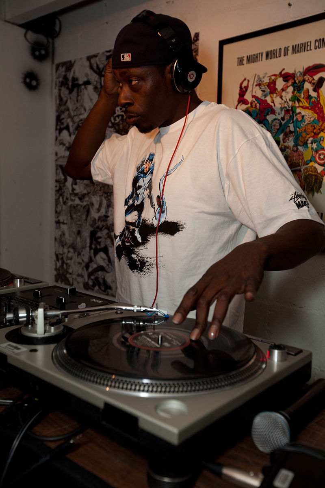

DJing and turntablism are the techniques of manipulating sounds and creating music and beats using two or more phonograph turntables (or other sound sources, such as tapes, CDs or digital audio files) and a DJ mixer that is plugged into a PA system.
One of the first few hip hop DJs was Kool DJ Herc, who created hip hop in the 1970s through the isolation and extending of "breaks" (the parts of albums that focused solely on the percussive beat). In addition to developing Herc's techniques, DJs Grandmaster Flowers, Grandmaster Flash, Grand Wizzard Theodore, and Grandmaster Caz made further innovations with the introduction of "scratching", which has become one of the key sounds associated with hip hop music.